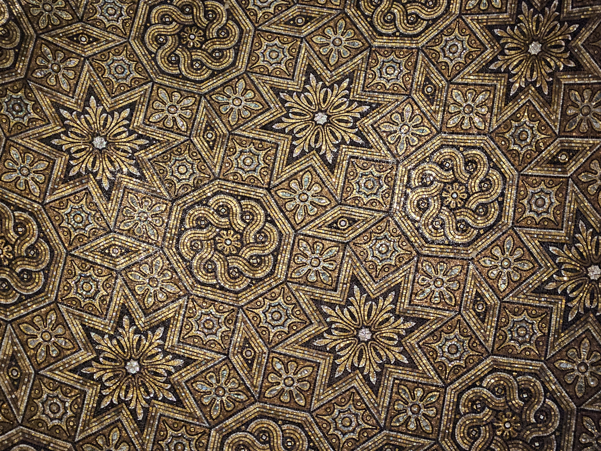
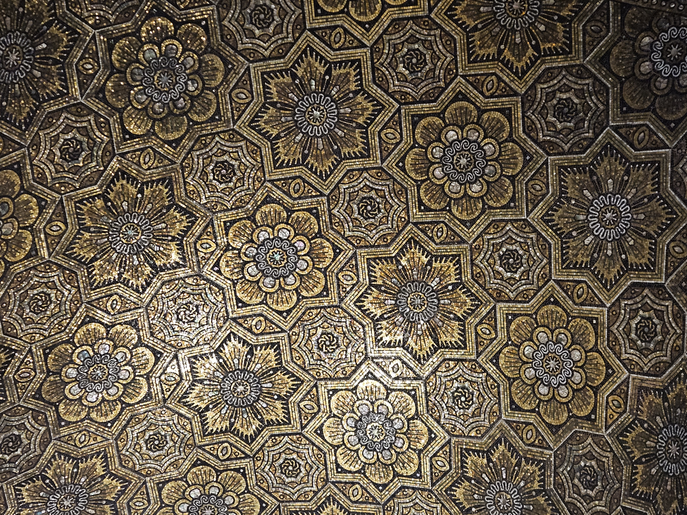
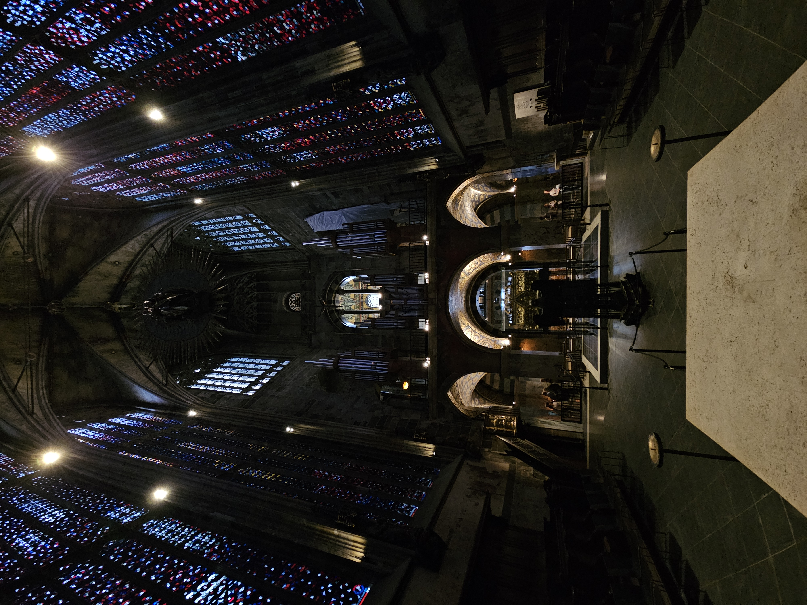
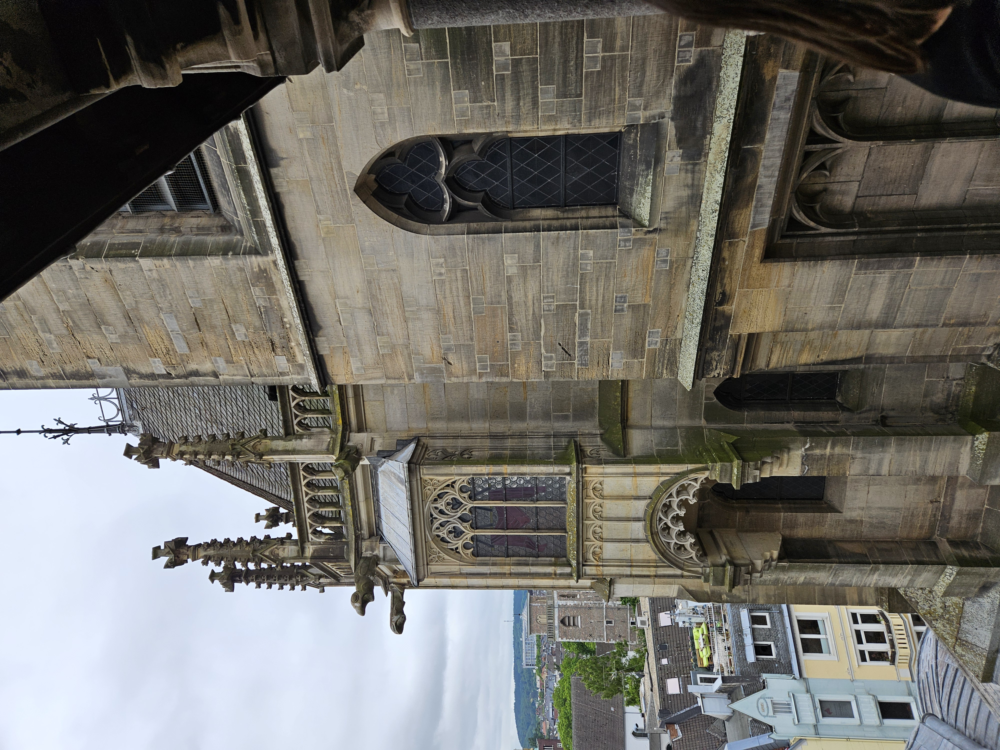
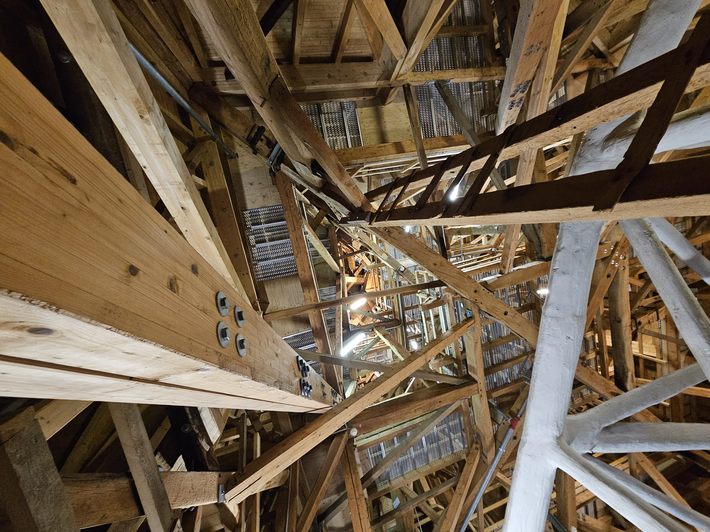
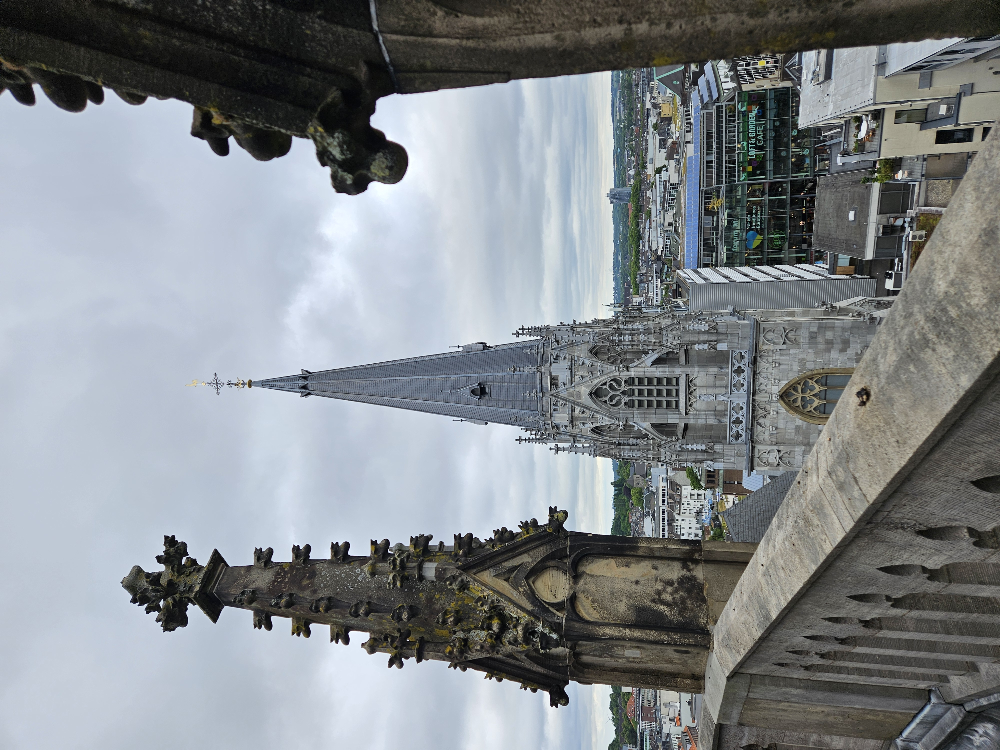

This semester, I took part in the seminar Dombau, where we studied the Aachen Cathedral in detail over several weeks. Instead of only learning about it through books or lectures, we explored many different parts of the building directly on site and gained a much deeper understanding of its architecture, construction, and history.

One of the most interesting experiences was visiting the roof structure of the cathedral. There, we could see the different wooden supports and construction elements up close. Some of the structural parts were covered with white cladding because asbestos is hidden underneath and has been sealed for safety reasons. Seeing these hidden layers of the building made the cathedral feel much more real and complex as a historical structure that has continuously changed over time.


We also spent time closely studying the mosaics, which were my favorite part of the cathedral. The colors, details, and atmosphere they create inside the space are incredibly impressive. During the seminar, we learned a lot about how the cathedral was originally built and how difficult construction was at that time for example, that stones were transported upwards by donkeys during the building process.

Analyzing construction details and structural elements.
As part of the course, we also measured certain parts of the cathedral ourselves and created a building analysis based on our observations. This practical approach made the seminar especially engaging because we were not only discussing architecture theoretically, but actively working with the building itself.


Overall, I really enjoyed the seminar because it gave us many different perspectives on the Aachen Cathedral and made me appreciate it in a completely new way. Even though the cathedral is such a familiar landmark in Aachen, the course revealed many hidden details and stories that I had never noticed before.